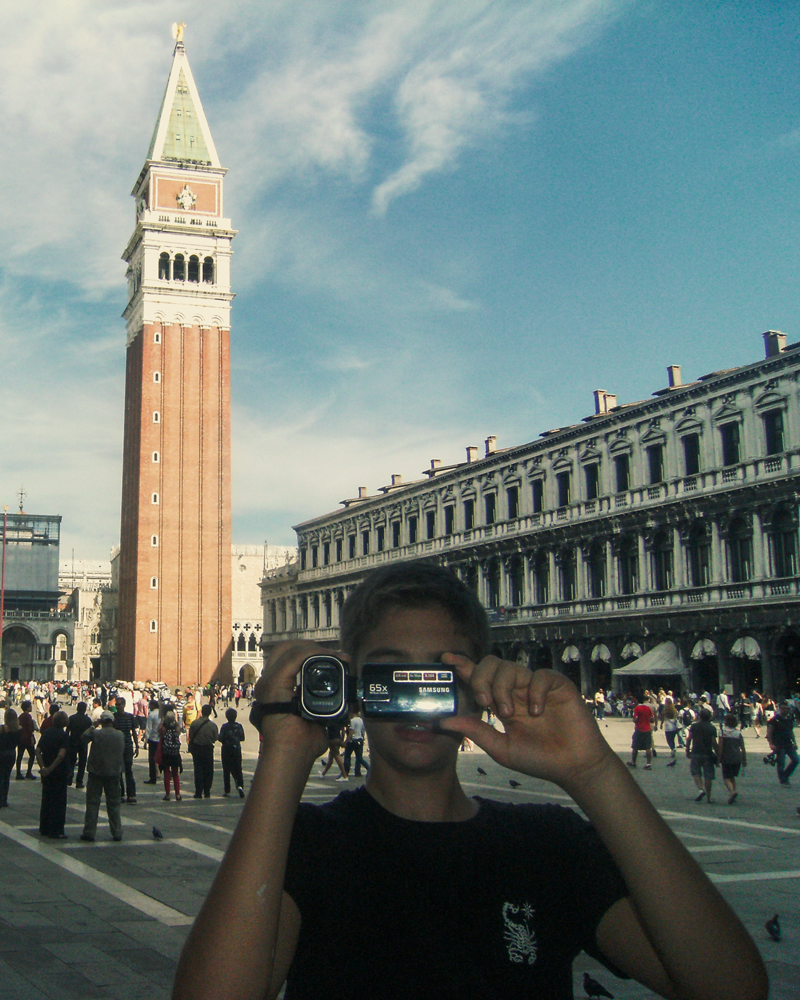
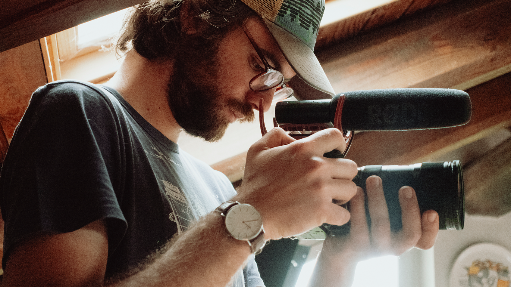
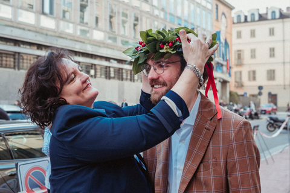
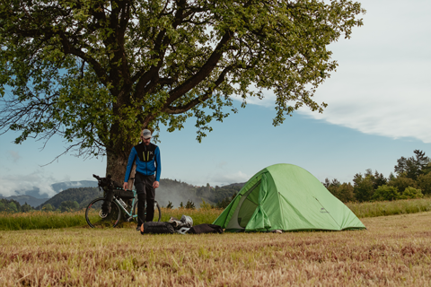

Sono Edoardo, classe 2000. Lagnaschese d’origine e torinese d’adozione. Ho iniziato per gioco, rubando la telecamera di mio padre per fare i filmini delle vacanze, col tempo, lentamente, quel gioco è diventato un lavoro.

Dopo il liceo artistico, ho scelto la Scuola APM di Saluzzo, frequentando il corso da "Tecnico di produzione video". Un anno intensivo di regia, montaggio, fotografia e audio che ha consolidato le mie basi tecniche e artistiche. L’esperienza è culminata in uno stage da Smart Factory, collaborazione che prosegue con successo ancora oggi. Dal 2021 opero come libero professionista, collaborando stabilmente con case di produzione torinesi e realtà del saluzzese.

Il mio rapporto con Torino, dal 2021, è anche il rapporto di uno studente con la sua città universitaria. Parallelamente alla macchina da presa, ho infatti portato avanti la mia formazione accademica. Nel 2024 mi sono laureato in Filosofia Teoretica con una tesi sul rapporto tra l’etica kantiana ed il socialismo.
Perchè la filosofia? Bah, potrebbe essere il tema di un corso intero all’Università. Per me, studiare il pensiero è stato il miglior metodo possibile per imparare a raccontare il mondo: se il cinema rappresenta la realtà, la filosofia cerca di comprenderla.

Certo la realtà non basta studiarla bisogna viverla! Così nel maggio 2025, dopo la laurea, sono partito in bicicletta per un viaggio di due mesi e 5.000 km, pedalando fino ad Atene e risalendo l'Italia da Bari. Un'odissea balcanica tra cascate, mare, montagne e tante persone, che presto diventerà una serie documentaria sul mio canale YouTube.
Hai un progetto in mente? Parliamone
prometto di non citare Kant nella prima mail:
edoardo.blua@gmail.com
Scarica CV